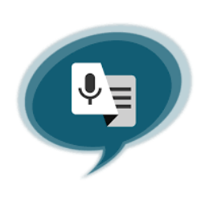
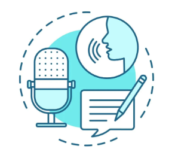

Conheça um pouco mais sobre a transcrição de audio
O que é?
A audiodescrição é um recurso de acessibilidade que permite que as pessoas com deficiência visual possam assistir e entender melhor filmes, peças de teatro, programas de TV, exposições, mostras, musicais, óperas e outros, ouvindo o que pode ser visto. É a arte de transformar aquilo que é visto no que é ouvido, o que abre muitas janelas do mundo para as pessoas com deficiência visual.

Leia maisVantagens
A transcrição aumenta o nível de compreensibilidade do conteúdo;
▪A transcrição de áudio aumenta a clareza do conteúdo falado;
▪Usuários surdos ou com deficiência auditiva preferem transcrições de áudio para entender melhor o conteúdo falado;
▪Usuários que não querem ouvir o conteúdo em áudio também preferem a transcrição para acompanhar o conteúdo.

Softwares
- meetgeek -Falar IA -Otter.ai -Beey -IA NOVA -Sonix -Verbit.ai